Active Directory Attack & Detection Lab
Building a complete Active Directory environment from scratch, simulating brute-force RDP attacks with Hydra, and detecting the activity through Splunk and Atomic Red Team testing.
Lab Overview
Objective
This project was about building an entire Active Directory environment from the ground up, not just using one that already existed. I wanted to understand how AD actually works behind the scenes — not just clicking through it as a help desk tech, but configuring domain controllers, organizational units, users, DNS, and network topology. Once that was set up, I simulated a brute-force RDP attack from a Kali machine and tracked the entire attack through Splunk. Finally, I used Atomic Red Team to run MITRE ATT&CK-mapped tests and confirm detection coverage.
Network Topology
I started by drawing out a topology diagram to map out the entire lab before spinning anything up. This kept everything organized and made troubleshooting way easier later on.
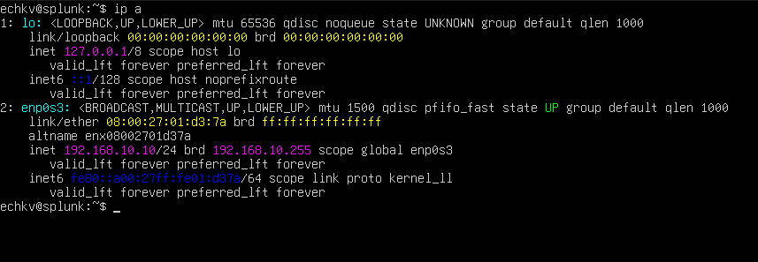
Virtual Machines
- Windows 10 Pro (Target): 192.168.10.100 — 4GB RAM, 2 cores, 50GB storage
- Windows Server 2022 (DC): 192.168.10.7 — 4GB RAM, 2 cores, 50GB storage
- Kali Linux (Attacker): 192.168.10.250 — 4GB RAM, 2 cores, 50GB storage
- Ubuntu Server (Splunk): 192.168.10.10 — 8GB RAM, 2 cores, 100GB storage
All VMs were placed on an internal NAT network in VirtualBox with the subnet 192.168.10.0/24. I named the network AD-Project-Net and manually assigned static IPs to each machine.
Phase 1 — Setting Up the Splunk Server
The Ubuntu server needed a static IP to match my topology. It was originally set to 192.168.10.3 via DHCP, but I changed it to 192.168.10.10 using Netplan.
sudo nano /etc/netplan/00-installer-config.yaml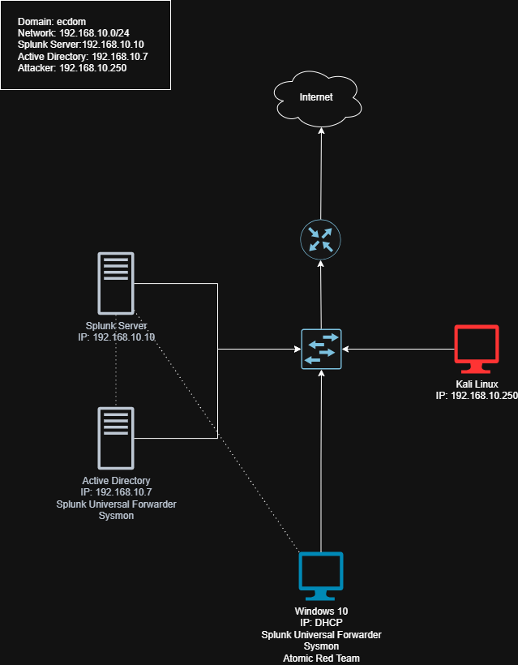

I turned off DHCP for both IPv4 and IPv6, set the static IP within the correct subnet, added Google's DNS server (8.8.8.8 — free and reliable), and left nameservers and routes to auto-fill. Fun fact: I originally typed "nameserver" instead of "nameservers" and had to go back and fix it. After that, I ran:
sudo netplan apply
Installing Splunk
I downloaded the Splunk Enterprise installer for Linux from splunk.com. To transfer it into the VM without internet access, I used VirtualBox's shared folder feature. I created a transient shared folder, installed VirtualBox Guest Additions on the Ubuntu server, and rebooted.
There was a hiccup where the Guest Additions install missed the virtualbox-guest-utils package, so file sharing didn't work. I had to reinstall them manually and reboot again. Once that was fixed, I added my user to the VirtualBox shared folder group:
sudo adduser echkv vboxsfThen I created a local shared directory, mounted it, and ran the Splunk installer.
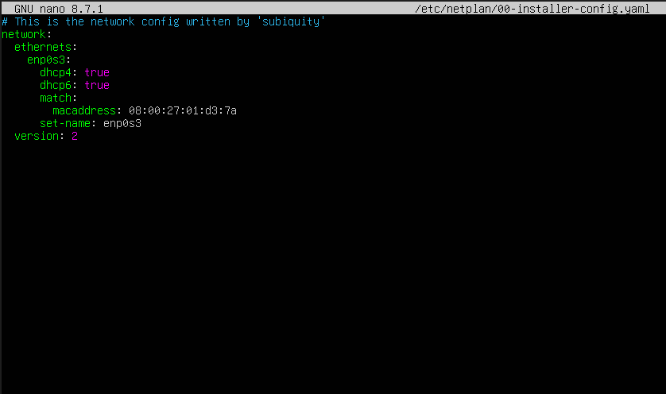
Phase 2 — Configuring Windows Machines
Both the Windows 10 target machine and the Windows Server 2022 DC needed static IPs.
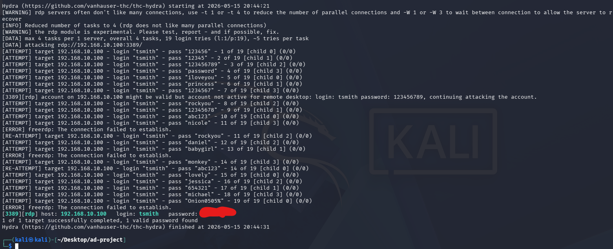
I configured the target machine with 192.168.10.100 and the server with 192.168.10.7 as planned in the topology.
Splunk Universal Forwarder
On the Windows target machine, I installed Splunk Universal Forwarder to ship logs to the Splunk server. I also had to modify the inputs.conf file to route logs through Sysmon.
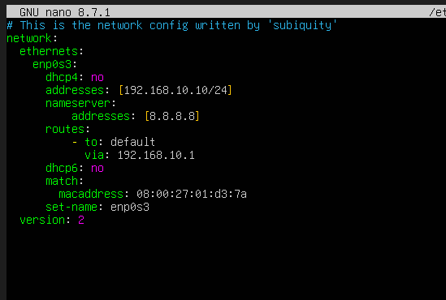
Then I accessed the Splunk web interface by navigating to 192.168.10.10:8000 in a browser, created a new index called endpoint, and configured Splunk to receive data on port 9997 (the default forwarding port).
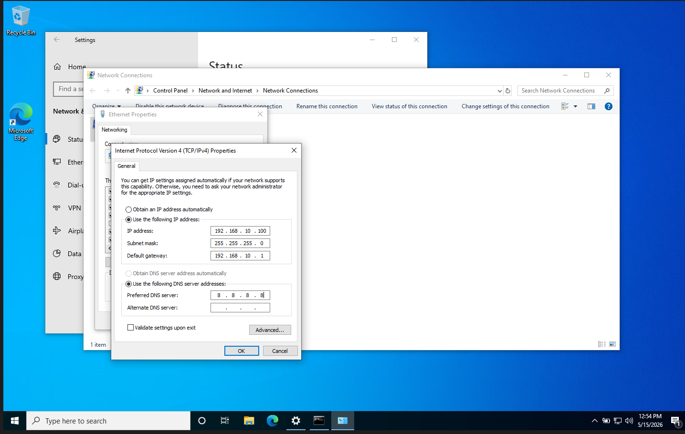

Phase 3 — Building Active Directory
On the Windows Server 2022 VM, I installed Active Directory Domain Services through Server Manager.
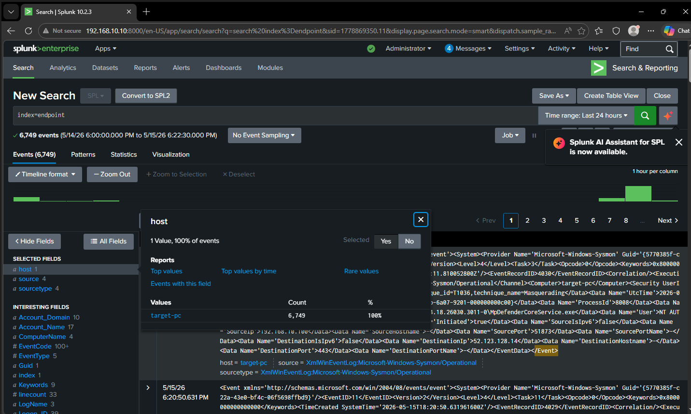
After the install finished, I promoted the server to a Domain Controller (DC).
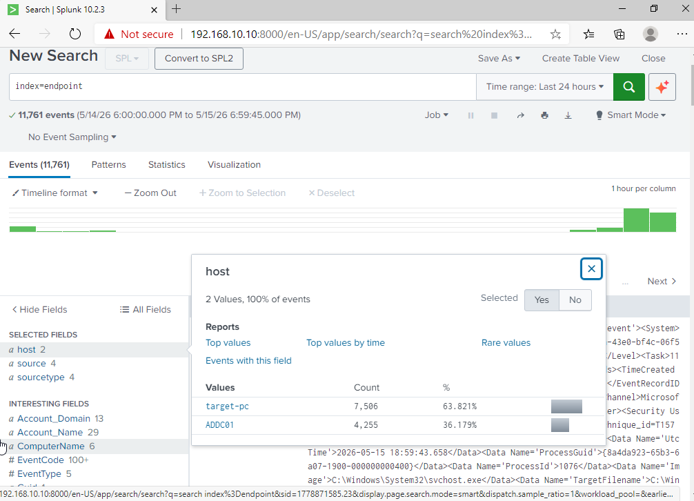
Creating OUs and Users
I created two Organizational Units (OUs) and a couple of test users, including "John Smith" and "Terry Smith." I've worked with AD plenty of times as a technical support specialist, but actually building the entire thing from the ground up was a completely different experience. Seeing how everything connects — the DNS, the domain structure, the user hierarchy — made everything click in a way it never did before.

DNS Troubleshooting
As we all know, DNS is a pain. I needed to switch the DNS server from Google's 8.8.8.8 to my domain controller at 192.168.10.7. I changed it in the network adapter settings, but no matter what I did, it kept reverting back to 8.8.8.8. I flushed DNS, ran netsh winsock reset and netsh int ip reset, and still nothing worked.
Then I remembered to check the registry editor. Sure enough, there it was — the DNS setting was hardcoded in the registry. I manually changed it to 192.168.10.7 and finally got it to stick.
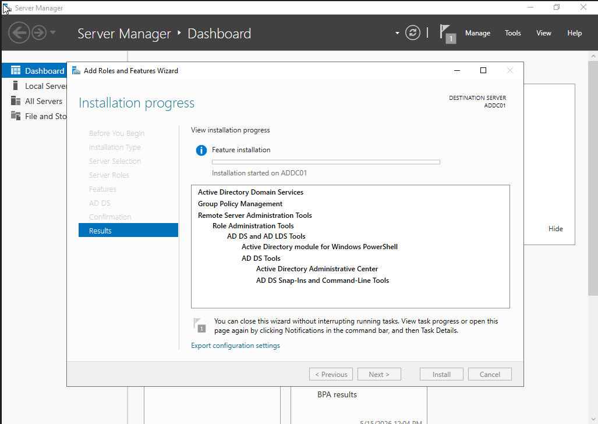
Phase 4 — Setting Up the Kali Attack Box
On the Kali Linux VM, I configured a static IP (192.168.10.250), set the subnet mask, default gateway, and DNS server.
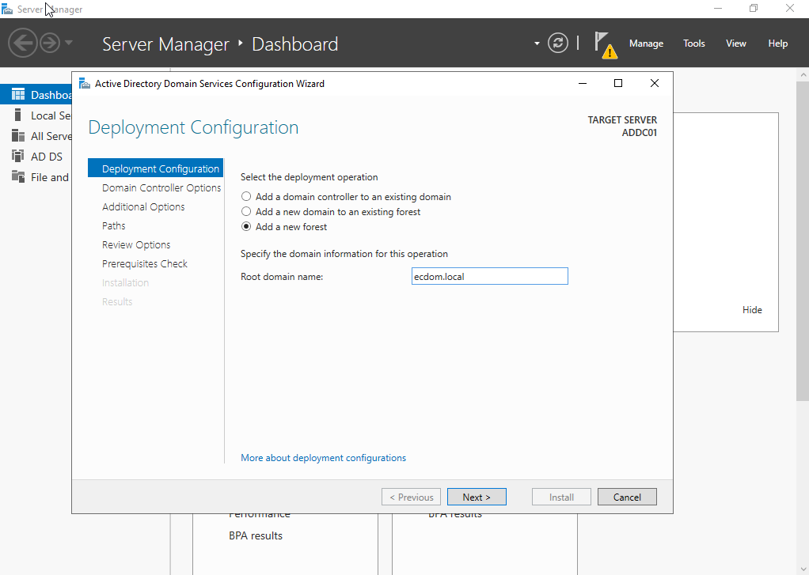
Phase 5 — Simulating the Attack
From the Kali machine, I set up a directory for the project and initially tried using Crowbar (a brute-force tool) to attack RDP. I installed Crowbar, created a passwords.txt file with 20 randomly generated passwords, and added a few of my own.

But I ran into a huge issue: RDP was blocked by the Windows firewall. I checked with Nmap and confirmed the port was open and that both test users were in the RDP group, but Crowbar just wasn't working.

Switching to Hydra
I gave up on Crowbar and switched to Hydra, a more modern and effective brute-forcing tool. I ran the following command:
hydra -l tsmith -P passwords.txt rdp://192.168.10.100And it worked. Hydra successfully brute-forced Terry Smith's account using one of my custom passwords.
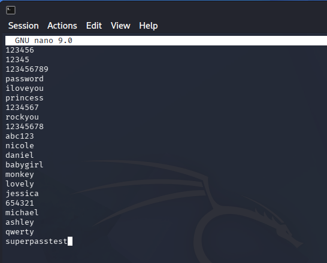
Phase 6 — Detection in Splunk
I switched back over to Splunk and searched for activity related to the compromised account:
index=endpoint tsmithI expanded the event code sections and immediately saw Event ID 4625 (failed logon attempt) showing up prominently. This makes sense — all of those failed brute-force attempts were logged here. Event ID 4624 is a successful logon, and 4648 is explicit credential use.
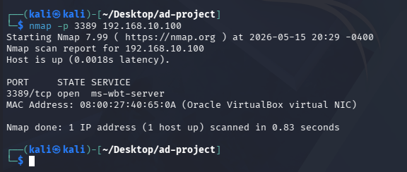
When I drilled into Event ID 4624 (successful logon), I found network information that confirmed the intrusion. The source machine was listed as Kali, and the source IP was 192.168.10.250 — clear evidence of an external attack.
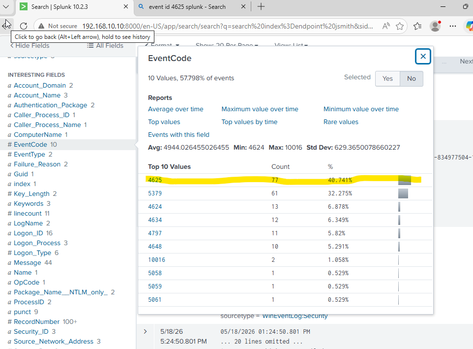
Phase 7 — Atomic Red Team Testing
To confirm detection coverage for additional attack techniques, I installed Atomic Red Team on the target machine using PowerShell. Atomic Red Team is a library of small, repeatable attack simulations built by Red Canary that map directly to the MITRE ATT&CK framework. It's basically a way to test whether your monitoring tools can actually detect real-world techniques.
I ran a test for MITRE technique T1136.001 — "Create Account: Local Account" — and then switched back to Splunk to hunt for the activity. I searched the logs and found an event for a newly created local user called NewLocalUser.
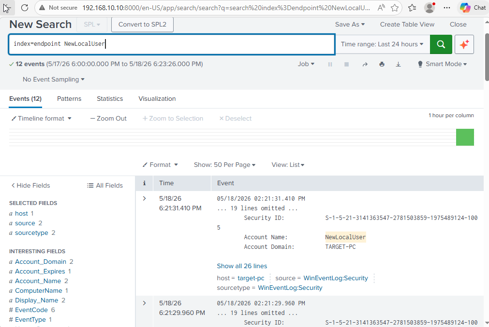
Lessons Learned
- 01Building Active Directory from scratch gave me a way deeper understanding of how everything connects — DNS, domain controllers, OUs, and user management. Clicking through AD as a tech is one thing. Building it is completely different.
- 02DNS troubleshooting is always painful, but checking the Windows Registry is now the first thing I'll do when network settings refuse to stick.
- 03Crowbar didn't work for me at all, but Hydra worked immediately. Having backup tools is essential.
- 04Splunk made it incredibly easy to track the brute-force attack. Event IDs 4625 and 4624 are gold for detecting failed and successful logon attempts.
- 05Atomic Red Team is an amazing tool for validating detection coverage. If you're not testing your monitoring, you're just hoping it works.
Takeaways
This lab was one of the most complete projects I've built so far. I went from topology planning to building a full AD environment, simulating a realistic attack, detecting it in Splunk, and validating coverage with Atomic Red Team. Every phase reinforced something I've worked with professionally but never fully understood until I built it myself.
If you're working toward a SOC or blue team role, I can't recommend this enough. Building AD from scratch, running your own attacks, and hunting them down in your own SIEM is the best way to learn how everything fits together.